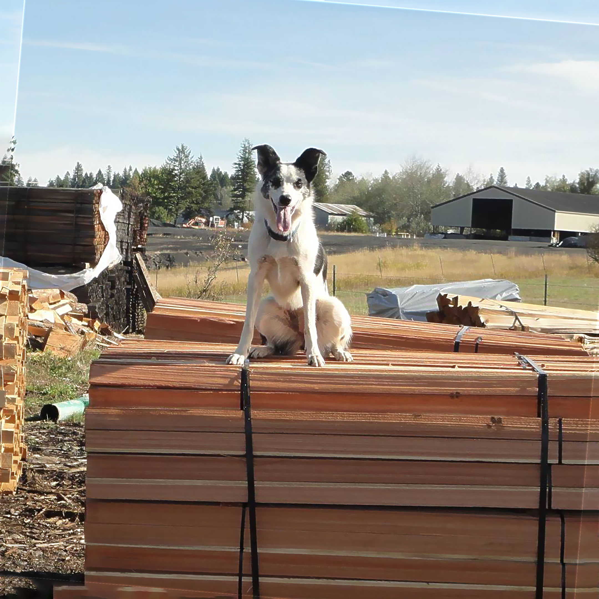

1975
The Beginning
In the year 1975, a man named Stan Yates started up a manufacturing business in Weippe, Idaho called Craft of Idaho.

Who are we?
20+ Years of Experience
In the year 1975, a man named Stan Yates started up a manufacturing business in Weippe, Idaho called Craft of Idaho.
For over a decade, Scott had worked at 2 mills. One of which happened to be Craft of Idaho. Scott has been a hard working man, so Mr. Stan Yates passed down his ownership to Scott. Once Scott had the opportunity to take ownership of this business, he renamed business to Cedar Creek Manufacturing
On May 15, 2011, Scott brought into the family a beautiful dog named Picket. She is this energetic dog that can brighten your day and has stuck with Scott ever since she came to the family.
In the afternoon of September 04, 2017, a fire broke out at the mill due to a faulty wire. This fire ended up burning the whole entire mulch pile, along with one of the main buildings.
Since the fire back in 2017, production did not stop there. It took around 3 years to rebuild and get back to where we were, but our employees managed to work hard and produce tremendous work despite the circumstance.
What our company's about
Scott London has spent his whole life working with wood, working at 2 different mill jobs including working for Mr. Stan Yates company at the time. In 2002, Scott bought the mill from Mr. Stan Yates, and is now the proud owner of Cedar Creek Manufacturing.
Scott London has spent his whole life working with wood, working at 2 different mill jobs including working for Mr. Stan Yates company at the time. In 2002, Scott bought the mill from Mr. Stan Yates, and is now the proud owner of Cedar Creek Manufacturing.
Cedar is Scott’s favorite type of wood. “It smells better than white fir, splits better than pine, and it has more personality than spruce,” said Scott London over 15 years ago during an interview with the Lewiston Tribune. Scott also loves to fish and camp with his wife Leanne London.
Scott London has spent his whole life working with wood, working at 2 different mill jobs including working for Mr. Stan Yates company at the time. In 2002, Scott bought the mill from Mr. Stan Yates, and is now the proud owner of Cedar Creek Manufacturing.
The Team
Owner
Scott London has spent his whole life working with wood, working at 2 different mill jobs including working for Mr. Stan Yates company at the time. In 2002, Scott bought the mill from Mr. Stan Yates, and is now the proud owner of Cedar Creek Manufacturing.
Cedar is Scott’s favorite type of wood. “It smells better than white fir, splits better than pine, and it has more personality than spruce,” said Scott London over 15 years ago during an interview with the Lewiston Tribune. Scott also loves to fish and camp with his wife Leanne London.
Co-Owner
Leanne London is one of the main engines around the business. She does a little bit of everything from hiring people, to working on the computer and doing emails, to helping out with cutting up wood.
Leanne is an artist. She has done many artworks such as paint pours, rock designs, taking industrial objects, and creating clocks out of them. Not only does she love to do art, she loves her ducks.
Kennel Manager
If you know the owner, then you know he doesn’t go anywhere without his canine friend, Picket. She never misses a day of work at the mill and is considered to be a very important part of the team. She supervises the day to day operations of the mill.
Picket loves sticks. You will never find Picket without one. Most of the time when she is at the mill with her dad, she runs around asking everyone
Cedar Creek Manufacturing